Megu's Profile
所属 - 大阪公立大学工業高等専門学校
コース - 知能情報コース
Skills
Languages
Python
授業、また個人でもGoogle ColaboratoryやTech Fullを通して学習しています。

C
プログラミング研究部でのパソコン甲子園の競技部門で使用しました。
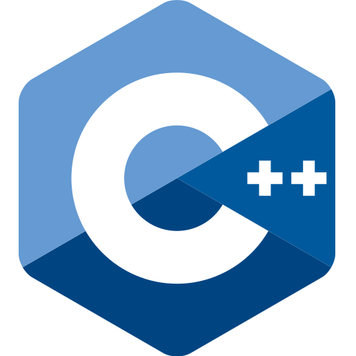
C++
プログラミング研究部で最初に勉強を始めた言語です。

Arduino
2年生前期のマイクロコンピュータの授業で学習しました。

Java
Progateで基礎を少し学習しました。

HTML
1年生の頃の実験実習、また2年生のプログラミングの授業で学習しました。

CSS
2年生のプログラミングの授業で学習しました。
Hot Soup Processor
中学校の部活動でゲーム作りを通して学習しました。
Tools

Scratch
小学生の頃に知り、単純なゲームの開発や座標の検証等に使用しています。
MCreator
MinecraftのMod開発に使用しています。

BlockBench
MinecraftのMod開発やリソースパック作りに使用しています。

GitHub
1年生の頃の実験実習、また2年生のプログラミングの授業で学習しました。
Google Colaboratory
プログラミングの授業で学習し、Pythonの開発環境として使用しています。
Progate
Python、Javaの基礎学習のために使用しました。

VSCode
Python、C、HTML、CSSなどの開発環境として使用しています。
TechFul
Pythonの学習のために使用しています。
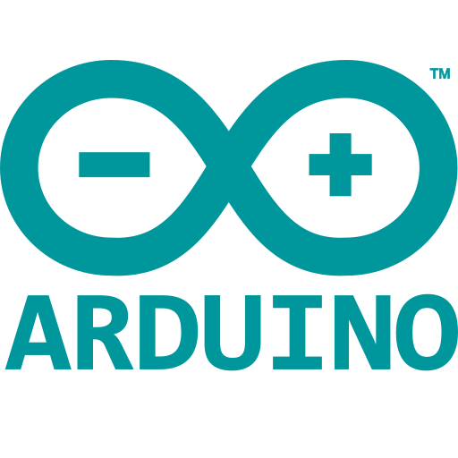
ArduinoIDE
2年生の工学基礎実習でArduinoを稼働させるために使用しました。

TinkerCAD
1年生の実験実習の3Dモデリング、2年生のマイクロコンピュータの授業の回路設計で使用しました。
Works
一般項生成プログラム
制作時期:2023年7月～2023年9月, 作業時間:約74時間
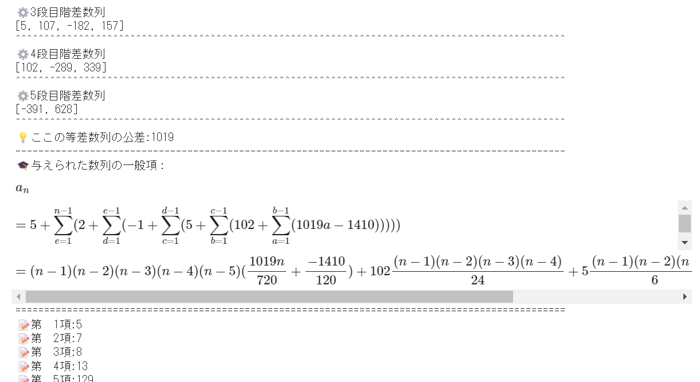
入力した数列から繰り返し階差数列を求め、一般項を導き出すプログラムを作成しました。
お試しはこちら
避難シミュレーション
制作時期:2023年7月～2024年1月
先輩の研究を引き継ぎ、他4人とUnityで共同開発を行いました。私たちが通う大阪公立大学工業高等専門学校の専門棟が舞台で、もし地震のように避難を必要する事態が発生した場合を想定して、どのルートから脱出を試みればよいかをVRでより臨場感を持ってシミュレーションすることができます。
スイカDEゲーム
高専祭
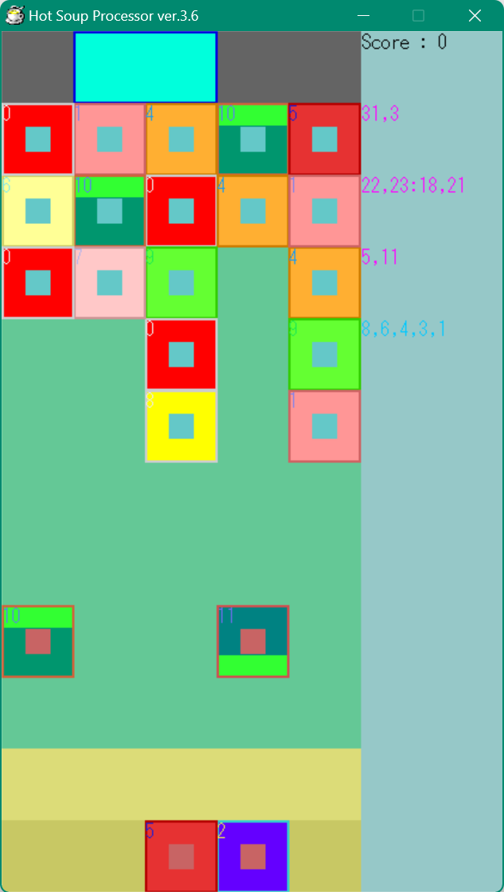
活動班で作成したヨッシーたまごとスイカゲームを融合させた落ちものパズルの、ゲームプレイの基盤となるプログラムをHot Soup Processorで作成しました。
完成品のお試しはこちら
Dimensiony
制作時期:2023年12月20日～2024年1月14日, 作業時間:約23時間
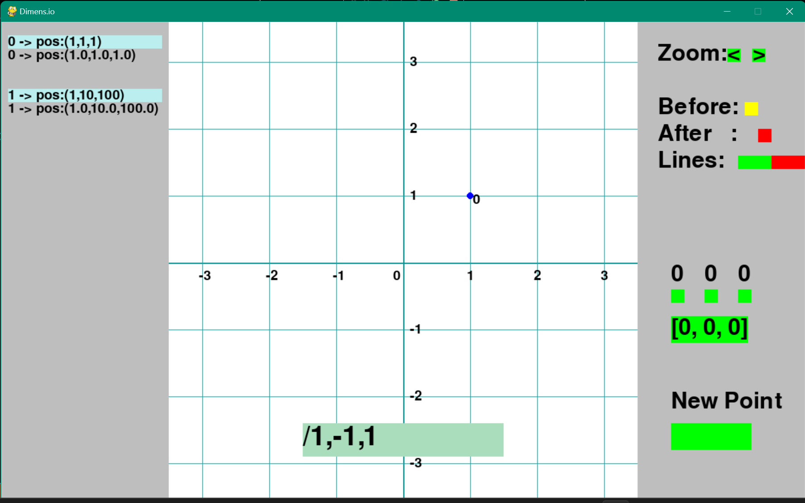
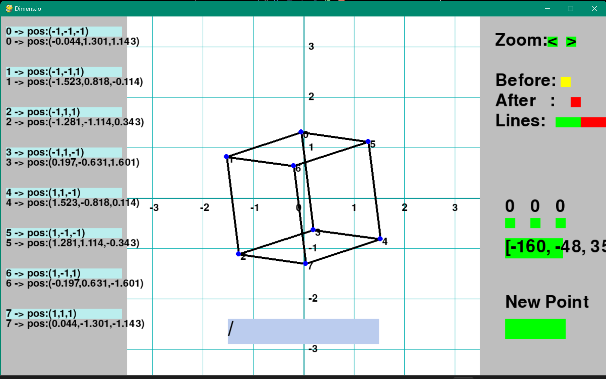
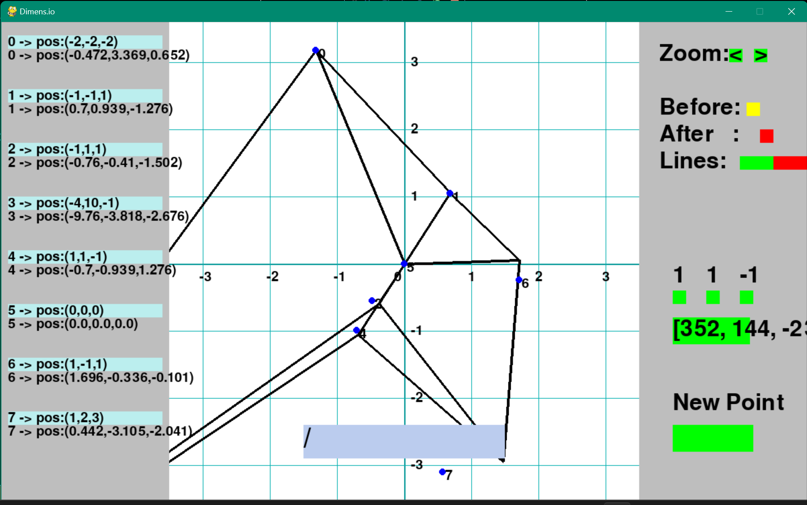
x,y,zの三次元上の点と軸周りの回転を利用して、三次元の立体を二次元に射影して表現するプログラムを作成しました。複数の機能があり、拡大率の調整(四段階)、回転前、後の点の表示切替、点同士を結ぶ線の追加、x軸、y軸、z軸周りの自動回転の速度、回転角度の調整、点の追加、点の座標再設定などができます。緑、赤、黄色、水色の長方形をクリックすると、それぞれ設定をすることができます。右側のGUIから、拡大率は"Zoom"の横の緑の正方形、回転前、後の点の表示切替は"Before","After"の横の黄色、赤の正方形、後述する点と点を結ぶ線を追加した後の消去は"Lines"の横の赤い長方形をクリックすることで調整が可能です。また、その他は整数の入力をすることで調整が可能です。調整したい要素の長方形をクリックし、中央の下にある入力欄が青から緑に変わった後、"0123456789-,"の数字と記号からそれぞれに合った形式で入力し、SPACEキーで実行、BACKSPACEキーで入力内容の取り消しができます。線の追加は、"Lines"の横の緑の長方形を繰りクリックし、結びたい2つの点の番号を","区切りで2つ入力(例:0,2)、x軸、y軸、z軸周りの自動回転の速度は、右側中央の緑の正方形3つが左からx,y,z軸周りの回転速度を一つずつ整数で入力(例:30)、その下の長方形がx,y,z軸周りの回転角度を","区切りで3つの整数を入力(例:45,30,-135)、その下の長方形も同じ形式で新たな点を合計8つまで座標を指定して追加(例:1,0,-1)、左の水色の長方形も同じく座標を入力することで再設定(例:-1,-2,0)することができます。
完成品のpythonファイルはこちら
Dimensiony-Arowana
制作時期:2024年2月, 作業時間:約20時間
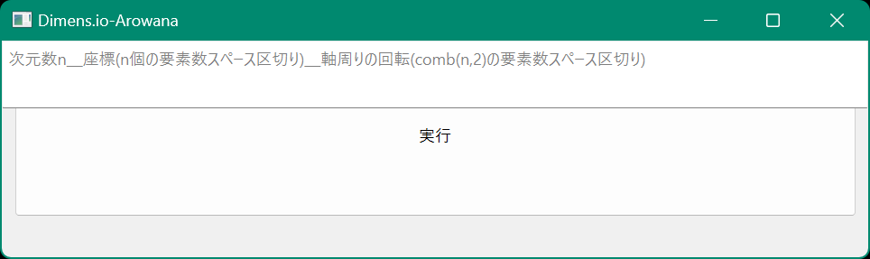
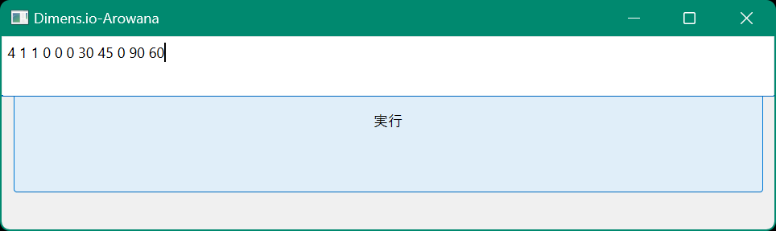
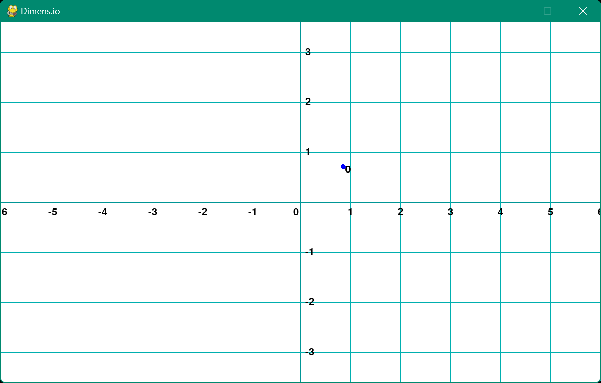
以前に3次元の立体を射影して2次元の平面図形として映し出す"Dimensiony"というプログラムを制作した。この点を映し出すプログラムを流用し、入力した情報をもとにn次元座標上にある点を軸周りの回転によって移動させ、その座標を出力するプログラムを制作した。操作方法は、ウィンドウに表示されている入力欄に、何次元の座標上の点を表示するかをn次元として、n（n>=2）、n個の座表要素（x,y,z,...など）、comb(n,2)通りの軸周りの回転角、をスペース区切りで入力する。（例えば、4次元座標上の点で、4つの座標要素x=1、y=1、z=0、w=0、comb(4,2)=6つの軸周りの回転角を45、45、0、0、60、60に指定すると、"4 1 1 0 0 45 45 0 0 60 60"と入力する。）指定した後、実行ボタンを押すことで、ウィンドウ下部に座標表示、新たに開いたウィンドウで図を表示する。
完成品のpythonファイルはこちら
Dimensiony-Salamander
制作時期:2024年6月
Hot Soup Processorで開発を行い、n次元超立体を表現することが可能になった、"Dimensiony-Arowana"のグレードアップバージョンです。
JavaScript解説 + Dimensiony-Lizard
制作時期:2024年7月
JavaScriptの基本的な知識や使い方に関する解説を行いました。さらに"Dimensiony-Salamander"のグレードアップバージョンである"Dimensiony-Lizard"を開発し、座標の入力やスムーズな図形表示などを実現させました。
こちらから
食品ロスを抑える(共同開発)
制作時期:2024年10月
DIA Blog
制作時期:2024年11月14日～2025年2月22日
"DIA Blog"は、普段の生活や日常の中で起きた出来事の記録や日記等、考えたことや感じたことを様々な人に共有することを主な使用用途とし、一般の人々を対象としている。
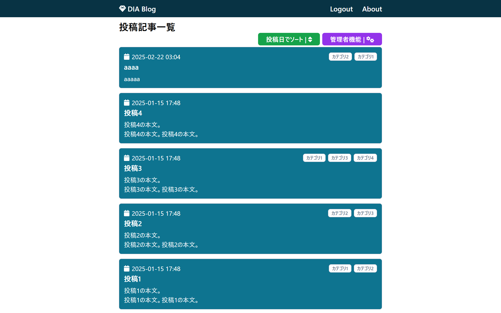
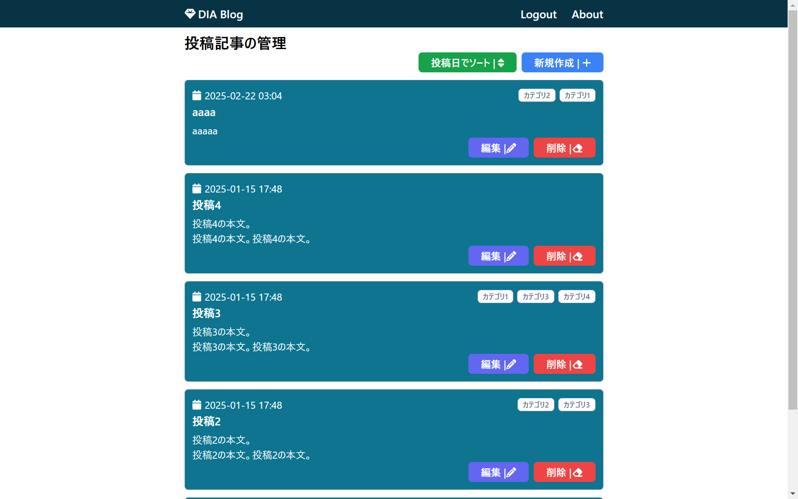
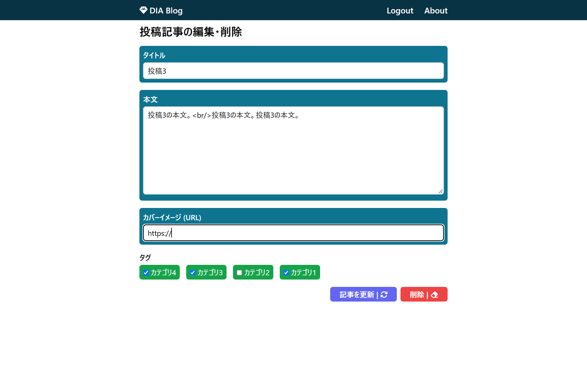
リポジトリ URLhttps://github.com/megumegu256/next-blog-app.git
公開 URLhttps://next-blog-app-megumegu256.vercel.app/
Linux(Ubuntu)サーバの構築および運用管理の手順書
制作時期:2024年12月
こちらから